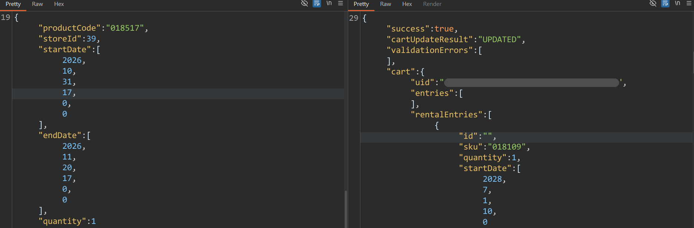
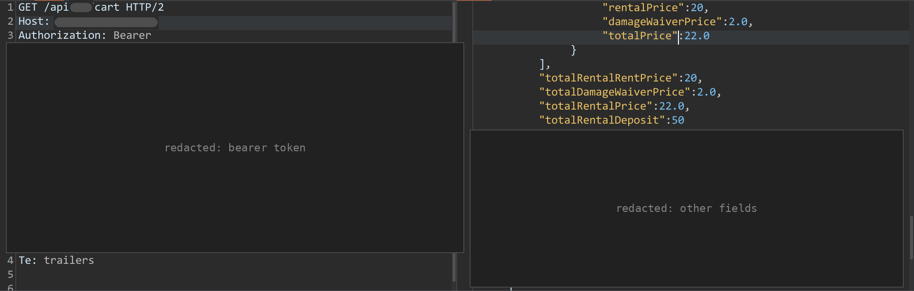
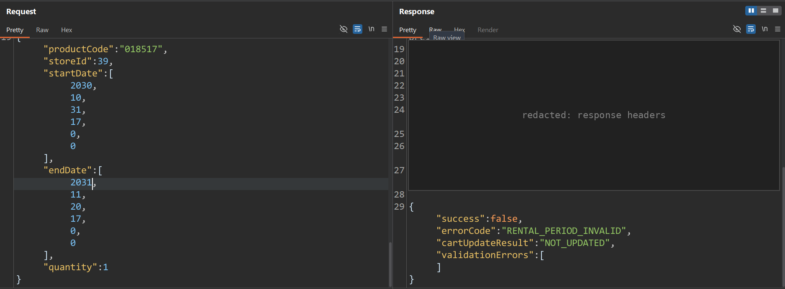
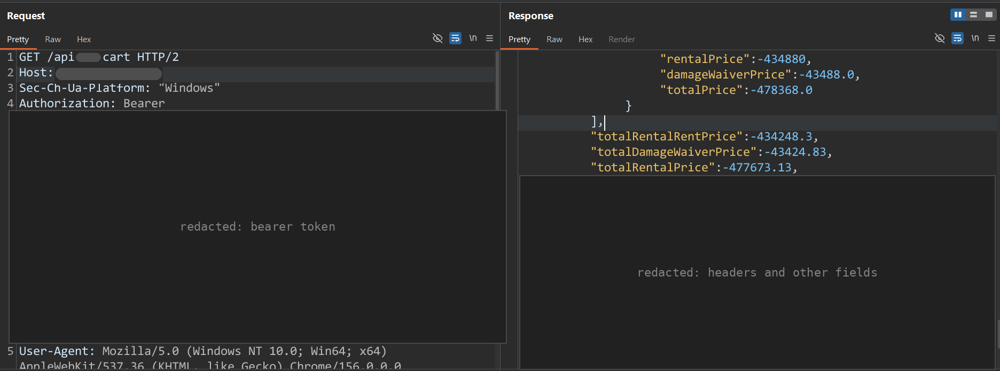

إني عكست التواريخ في تاني ريكويست وانا بضيف منتج، خلّى الكارت ينزل لـ −€477,673.13.
الحالة. بلّغت عنها، واتصلحت، واتقفلت كـ duplicate. حد كان سابقني ليها. بس طريقة التفكير لسه تستاهل تتكتب.
النوع. Business logic. المسار اللي بيحدّث الكارت مكانش بيعمل validation على فترة الإيجار. الخطورة high.
من الآخر (TL;DR)
التارجت منصة e-commerce فيها خاصية إيجار. بتختار منتج، وتحدد تاريخ بداية وتاريخ نهاية، والباك إند بيحسب سعر السطر على حسب المدة.
لو ضفت إيجار تاريخ نهايته قبل تاريخ بدايته، بيترفض أول مرة، لأن مسار الإنشاء (create) بيعمل validation على الفترة. بس لو ضفت نفس المنتج تاني مرة، الرد بيرجع cartUpdateResult: UPDATED. مسار التحديث ده بيقبل الفترة المعكوسة وبيسعّر السطر بالسالب. سطر واحد مسموم سحب إجمالي الإيجار لـ −€477,673.13.
مسار الإنشاء ومسار التحديث مش بيستخدموا نفس الـvalidation. أول write محمي، والتاني لأ.
النطاق وقواعد اللعبة
- اسم التارجت والبرنامج متخبيين. مش هقول اسم الشركة.
- Black-box، بأكونتي أنا، ووقفت عند الكارت.
- التوكنز واسم الـhost ومسار الـAPI متغطيين في الصور.
1. بفهم الخاصية الأول
فتحت منتج ينفع يتأجر، وفضلت باصص على الـnetwork tab وأنا بغيّر تواريخ الإيجار.
تواريخ الإيجار مش ديكور. هي ماشية مع سطر الكارت، وهي اللي بتحدد السعر اللي السيرفر بيحسبه.
POST /api/rental
{
"productCode": "018517",
"storeId": 39,
"startDate": [2026, 10, 31, 17, 0, 0],
"endDate": [2026, 11, 20, 17, 0, 0],
"quantity": 1
}رد الكارت: كل سطر معاه سعر السيرفر هو اللي حاسبه.


الإيجار العادي بيتسعّر صح وبالموجب. لما تقرا الكارت تاني بـGET بأكونتك، هتلاقي: €20 إيجار، €2 waiver، €22 إجمالي، و€50 تأمين (deposit). السيرفر هو اللي ماسك السعر.


ده التصميم الصح، بس معناه كمان إن دالة التسعير هي نقطة الفشل الوحيدة. السؤال مبقاش "أقدر ألعب في السعر؟"، بقى "أقدر أدّي المعادلة input المطوّر عمره ما تخيله؟". والتواريخ في إيد اليوزر، فهي دي الحتة اللي هلعب فيها.
2. بدوّر على حدود فترة الحجز
قبل ما أجرب أي حركة ذكية، جسّيت الحدود الأول. فضلت أبعّد التواريخ في المستقبل لحد ما السيرفر قال لأ.
الفترة اللي برة الـwindow بتترفض. الترتيب صح، البداية قبل النهاية، بس النهاية بعيدة أوي في المستقبل.
{
"productCode": "018517",
"storeId": 39,
"startDate": [2030, 10, 31, 17, 0, 0],
"endDate": [2031, 11, 20, 17, 0, 0],
"quantity": 1
}{
"success": false,
"errorCode": "RENTAL_PERIOD_INVALID",
"cartUpdateResult": "NOT_UPDATED",
"validationErrors": []
}

الـwindow المسموح بيقف عند 2031 تقريباً، يعني حوالي خمس سنين لقدام. والأهم لباقي الحكاية: فيه validation حقيقي على مسار الإنشاء. فيه كود بيبص على فترة الإيجار ويرفضها بـ RENTAL_PERIOD_INVALID قبل ما السطر يتعمل أصلاً.
خلّي النقطة دي في دماغك. الباج هو مسار تاني مش بيعمل نفس الـcheck ده.
3. الـvalidation بتاع التواريخ صارم قد إيه؟
بدأت أبعت للـrequest بتاع الإضافة ranges معكوسة وتواريخ مش مظبوطة.
على إضافة جديدة، مسار الإنشاء ماسك كويس. الـrange المعكوس بيترفض، والـrange المترتب صح بس بعيد أوي في المستقبل بيترفض بـ RENTAL_PERIOD_INVALID وNOT_UPDATED. الفترة بتتراجع قبل ما السطر يتعمل أصلاً.
يعني أول write محمي. الحتة المثيرة هي اللي بيحصل في التاني.
4. الإضافة التانية
ده قلب الموضوع.
ضفت منتج، وبعدين ضفت نفس المنتج تاني، وبصيت الـAPI سمّى النتيجة إيه.
الإضافة التانية رجعت كـ update، مش سطر جديد.
{
"success": true,
"cartUpdateResult": "UPDATED",
"validationErrors": [],
"cart": { … }
}الكارت بيعرف سطر الإيجار من المنتج، مش من التواريخ اللي في الـrequest. فالإضافة التانية بتنزل على السطر الموجود أصلاً.
أكشن واحد، "ضيف المنتج ده"، بيتحول لسلوكين مختلفين على السيرفر.
- أول إضافة، مسار الإنشاء. السطر لسه مش موجود. السيرفر بيعمله، وبيشغّل الـvalidation بتاع الفترة اللي في الجزء 2، وبيسعّره. السعر موجب.
- تاني إضافة، مسار التحديث. السطر موجود أصلاً ومتعرّف بالمنتج. السيرفر بيحدّثه بالتواريخ الجديدة. وهنا الـrange المعكوس بيعدّي وسعر السطر بيبقى بالسالب.
مسار التحديث بياخد تاريخ البداية والنهاية الجداد من غير ما يعيد الـvalidation بتاع الفترة اللي مسار الإنشاء بيشغّله. فيه validation على الإنشاء، والإضافة التانية راجعة UPDATED بصريح العبارة، والكارت في الآخر شايل سطر بالسالب.
الإضافة التانية كانت بـrange معكوس بحوالي سنة، فالمدة بتطلع بالسالب جامد:
{
"productCode": "018517",
"storeId": 39,
"startDate": [2031, 10, 31, 11, 0, 0],
"endDate": [2030, 10, 31, 10, 0, 0],
"quantity": 100
}الخلاصة: مسارين كود لأكشن واحد، وواحد بس فيهم اللي محمي. دي حاجة تستاهل تدوّر عليها في أي كارت أو wishlist أو flow حجز.
5. ليه السعر بيطلع بالسالب
دالة تسعير شكلها كدا بتطلّع النتيجة دي بالظبط:
function price(item, start, end):
hours = (end - start) / 3600
if hours < 24:
return ceil(hours) * item.hourlyRate
return ceil(hours / 24) * item.dailyRateمع range معكوس، hours بتطلع بالسالب. وأي رقم سالب أصغر من 24، فبيدخل في فرع الساعات والنتيجة سعر سطر بالسالب. مفيش check زي hours > 0. المطوّر افترض إن الـvalidation ضمن قبل كدا إن المدة موجبة. على مسار الإنشاء، فعلاً كان ضامنها. على مسار التحديث، لأ.
والإضافة التانية كان فيها كمان quantity: 100، فسعر السطر السالب بيتضرب في 100 وحدة. وعشان كدا الرقم بيطلع ضخم كدا.
الـvalidation والتسعير كانوا منطقتين ثقة منفصلين، ومسار التحديث خلاني أنط فوق الأولى.
6. الكارت المسموم
الكارت في الآخر مجموع. أول ما سطر واحد يبقى بالسالب، بيسحب الإجمالي لتحت وبيلغي قصاده أي سطر موجب.
من الـresponse بتاع الكارت على طول:
| الحقل | القيمة |
|---|---|
rentalPrice بتاع السطر المسموم | −€434,880.00 |
damageWaiverPrice بتاع السطر المسموم (10%) | −€43,488.00 |
totalPrice بتاع السطر المسموم | −€478,368.00 |
totalRentalRentPrice بتاع الكارت | −€434,248.30 |
totalDamageWaiverPrice بتاع الكارت | −€43,424.83 |
totalRentalPrice بتاع الكارت | −€477,673.13 |
إجمالي الإيجار −€434,248.30 معناه إن فيه سطر موجب بـ +€631.70 السطر السالب بلعه. والإجمالي النهائي هو الرقم ده زائد الـdamage waiver بتاع الـ10%.


الـresponse بتاع الـAPI نفسه شايل القيم السالبة، يعني ده مش glitch في عرض الفرونت إند. الإيجار اتضاف للكارت فعلاً، والكارت شال القيمة السالبة.
سطور الإيجار والمنتجات العادية بيتجمعوا في إجمالي واحد للكارت. فالسطر السالب بيلغي قصاده كل اللي في الكارت، مش الإيجارات بس.
7. طبقة الدفع
أنا وقفت عند الكارت، فالجزء ده عن الـpayment processors بتشتغل إزاي بشكل عام، وليه ده مهم في باج زي ده.
- الـprocessor بيعمل validation على اللي بيتبعتله وبس. المبلغ لازم يبقى موجب وفوق حد أدنى. هو ميعرفش أي حاجة عن الكارت المفروض يتكلف كام.
- لو الباك إند بعت إجمالي واحد موجب، مثلاً منتج بـ€100 قصاده سطر بـ −€80 والحساب طلع €20، الـprocessor هيسحب الفلوس عادي. الرقم اللي وصله شكله سليم.
- لو الإجمالي بالسالب، الـprocessor بيرفض المبلغ. وده بيحمي الـprocessor نفسه، مش المخزون بتاع التاجر ولا حساباته.
- الحتة الخطيرة بجد هي إن الإجمالي يبقى صفر بالظبط. محلات كتير عندها مسار للأوردرات المجانية، وسطر سالب ممكن يوصّل الإجمالي لهناك.
الـprocessor ده آلة حاسبة بتديها رقم. الرقم لازم يكون صح قبل ما يوصلها.
اللي مجربتوش
الـcheckout. أنا وقفت عند الكارت ومعملتش أوردر بإجمالي سالب أو صفر، فالـcheckout هيعمل إيه مع الإجمالي ده هو الحتة الوحيدة اللي لسه مفتوحة.
المسارين ماشيين إزاي
POST /api/rental
|
+-- no line yet ---- create
| |
| +-- period refused --> RENTAL_PERIOD_INVALID
| +-- period accepted -> positive price
|
+-- line already there -- update
|
+-- reversed dates
|
+-- negative line
|
+-- poisoned cart totalبالعربي: لو السطر لسه مش موجود، بيروح على create، والفترة يا إما تترفض بـ RENTAL_PERIOD_INVALID يا إما تتقبل بسعر موجب. لو السطر موجود، بيروح على update، والتواريخ المعكوسة بتعدّي، فيطلع سطر بالسالب، وإجمالي الكارت كله يتسمم.
السبب الأساسي
- مفيش check مشترك لـ
end > startعلى مسار التحديث. الـvalidation موجود على الإنشاء بس. - دالة تسعير مفيهاش check لمدة سالبة أو نتيجة سالبة.
- الكارت بيقبل سطر سعره صفر أو أقل.
التأثير
- إنك تلغي منتجات متسعّرة صح، إيجار أو عادية، بسطر إيجار بالسالب، وتدفع أقل من قيمتها.
- توصّل الكارت لإجمالي صفر، وده ممكن يعدّي الدفع خالص على حسب الـcheckout بيتعامل إزاي مع الأوردرات المجانية.
- خسارة في المخزون والإيرادات، غير وجع الدماغ في المرتجعات والحسابات.
الإصلاحات المقترحة
- اعمل validation لـ
end > start، بالتاريخ والساعة كاملين والـtimezone، على كل المسارات: الإنشاء والتحديث والدمج (merge). - حط قواعد الفترة في function واحدة مشتركة، والمسارين الاتنين ينادوها.
- ارفض أي مدة مش موجبة وأي سعر مش موجب جوا دالة التسعير نفسها.
- في الـcheckout، احسب الكارت من الأول وافشل لو أي سطر
<= 0. - متعملش أوردر بدفع صفر إلا لو الإجمالي المجاني ده اتحسب صح فعلاً.
- ضيف regression tests للـranges المعكوسة، وحافة فترة الحجز، والإضافة مرتين، والإضافة بعد التحديث.
تطلع بإيه من الحكاية دي
- دوّر على الـwrite التاني. الإنشاء والتحديث والدمج غالباً مسارات منفصلة، وواحد بس فيهم اللي بياخد الـvalidation. لو أول إضافة طلعت نضيفة، ضيف تاني.
- جسّ الحدود. حدود فترة الحجز غالباً بيطبّقها كود غير الكود اللي بيسعّر.
- "السيرفر هو اللي بيحسب السعر" مش نهاية الحكاية. اسأل نفسك المعادلة عمرها ما اتجربت على أنهي inputs.
- الـpayment processor مش هو الـbusiness logic. هو بيشوف الرقم اللي بيتبعتله وبس.
بخصوص النشر. منشور بإذن البرنامج. المشكلة اتبلّغ عنها، واتصلحت، واتقفلت كـ duplicate لريبورت كان قبلها.
شكراً إنك قريت. دي أول writeup ليا.